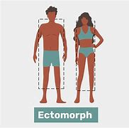
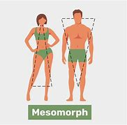
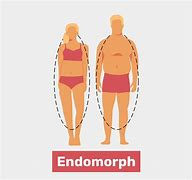

Ectomorph
Ectomorphs typically have a lean and slim physique with narrow shoulders and hips. They may find it challenging to gain muscle mass.
Mesomorph
Mesomorphs are characterized by a muscular and athletic build with a naturally higher percentage of muscle mass. They can gain and lose weight relatively easily.
Endomorph
Endomorphs tend to have a softer and rounder body shape with a higher percentage of body fat. They may find it easy to gain weight but challenging to lose it.